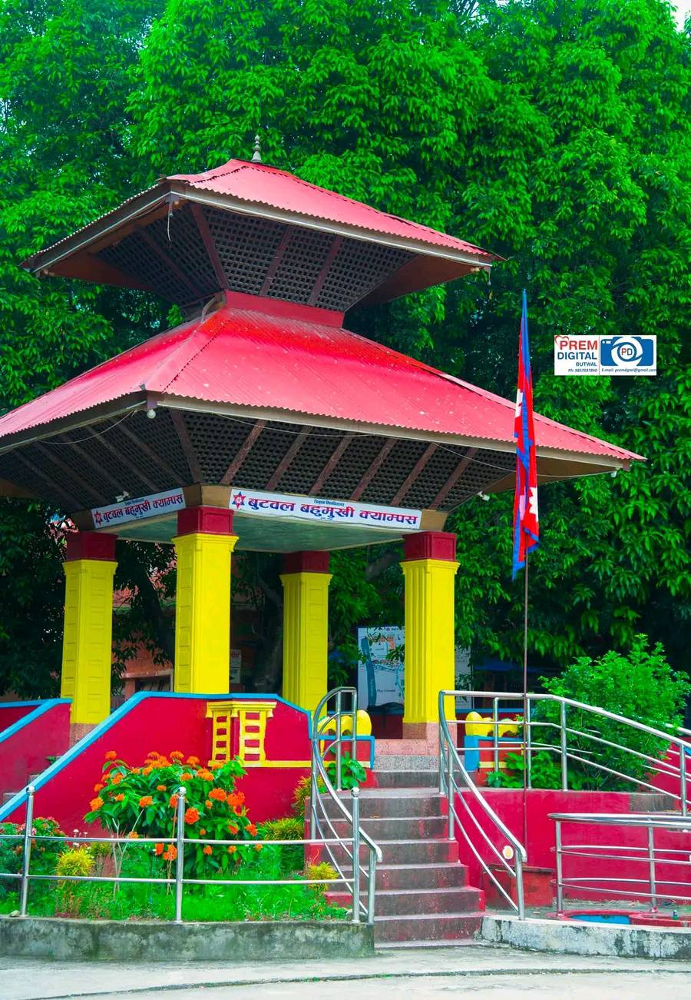

Butwal Multiple Campus is a prominent educational institution located in Butwal, Rupandehi district,
within the heart of Lumbini Provience. Established in 2030 B.S. (1973 A.D.), this campus was founded with
the vision of providing affordable and quality higher education to students.Over the decades, it has earned
a reputation for academic excellence and has become a preferred destination for students seeking higher education
in various disciplines. The campus is affiliated with Tribhuvan University (TU), the oldest and most prestigious university
in Nepal. Programs Offered BMC offers a wide range of programs in diverse fields, including humanities, management, education,
and science. The campus provides both undergraduate and graduate-level courses, making it accessible to a broad
spectrum of students. Popular programs include Bachelor of Science in Computer Science and Information Technology
(B.Sc. CSIT), Bachelor of Business Administration (BBA), Bachelor of Business Studies (BBS), Bachelor of Education
(B.Ed.), Bachelor of Arts (BA), Bachelor of Science (B.Sc.), and Master's programs in Education (M.Ed.) and Business
Studies (MBS). These programs are designed to equip students with the knowledge and skills necessary to excel in their
chosen careers. Butwal Multiple Campus is a cornerstone of higher education in Nepal, providing students with quality education, robust infrastructure,
and opportunities for personal and professional growth. Its commitment to academic excellence and community service ensures its place as a leading institution in the region.
As the chief of the campus, I will always be active for meeting the vision of Tribhuvan University and its mission, goals and objectives and I will cope with all the stakeholders of this campus for its academic excellence.
